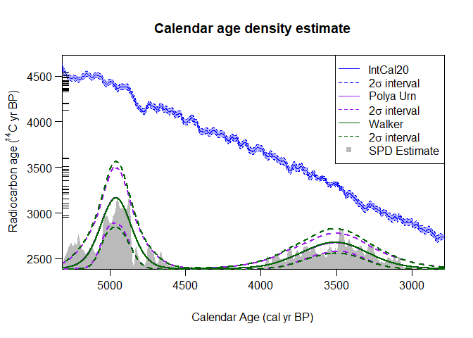

An R package to analyse, and summarise, multiple radiocarbon (14C) determinations. The package provides two linked (but distinct) Bayesian approaches that can both be used to obtain rigorous and robust alternatives to summed probability distributions (SPDs):
- Bayesian Non-Parametric Density Estimation (Modelling the joint, summary, calendar distribution as an unknown mixture of calendar age clusters)
- Variable-Rate Poisson Process Estimation (Modelling changes in the occurrence rate of the 14C samples over calendar time)
Both methods are implemented using Markov Chain Monte Carlo (MCMC). The package is based partly on the original functions available here which were used for “Non-parametric calibration of multiple related radiocarbon determinations and their calendar age summarisation” (Heaton 2022).
Installation
The easiest way to install the latest release is via CRAN, by typing the following into your R console:
install.packages("carbondate")You can alternatively install the development version of carbondate from GitHub with:
devtools::install_github("TJHeaton/carbondate")Once you have installed the library with either of the above methods, you need to load it using:
Data
There are a few example datasets of radiocarbon determinations (e.g., two_normals, kerr, pp_uniform_phase, buchanan, alces, equus, human, …) provided, which can be used to try out the calibration functions. two_normals is a small simulated dataset for which the underlying calendar ages were drawn from a known mixture of two normals. It is included simply to give a quick-to-run example for the Bayesian Non-Parametric Density calibration functions. pp_uniform_phase is another small simulated dataset, for which the underlying calendar ages were drawn uniformly at random from a short calendar interval (equivalent to a single uniform phase). This is included to give a quick-to-run example for the Poisson Process modelling functions. The remaining datasets are from real-life data. The Northern Hemisphere IntCal calibration curves and Southern Hemisphere SHCal calibration curves are also provided.
Bayesian Non-Parametric Calibration: Quick-Start Example
The below example implements the Bayesian non-parametric calibration and summarisation approach on the simulated two_normal data using the IntCal20 curve via two (slightly) different MCMC methods.
polya_urn_output <- PolyaUrnBivarDirichlet(
rc_determinations = two_normals$c14_age,
rc_sigmas = two_normals$c14_sig,
calibration_curve=intcal20)
walker_output <- WalkerBivarDirichlet(
rc_determinations = two_normals$c14_age,
rc_sigmas = two_normals$c14_sig,
calibration_curve=intcal20)Once the calibration has been run, the resultant estimate for the joint (summary) calendar age density can be plotted.
PlotPredictiveCalendarAgeDensity(
output_data = list(polya_urn_output, walker_output),
show_SPD = TRUE) The summary estimates generated by the Bayesian non-parametric approach (shown in purple and green) are called predictive densities. They aim to predict the calendar age of a future (new) sample based upon the set of 14C samples that you have summarised.
Poisson Process Modelling: Quick-Start Example
The below example implements the Poisson process modelling approach using the simulated pp_uniform_phase data and the IntCal20 curve.
pp_output <- PPcalibrate(
rc_determinations = pp_uniform_phase$c14_age,
rc_sigmas = pp_uniform_phase$c14_sig,
calibration_curve=intcal20)Once the calibration has been run, the posterior estimate for the occurrence rate of the samples can be plotted.
PlotPosteriorMeanRate(output_data = pp_output) This estimated rate, and changes within it, can be interpreted equivalently to methods of calendar age summarisation.
This estimated rate, and changes within it, can be interpreted equivalently to methods of calendar age summarisation.